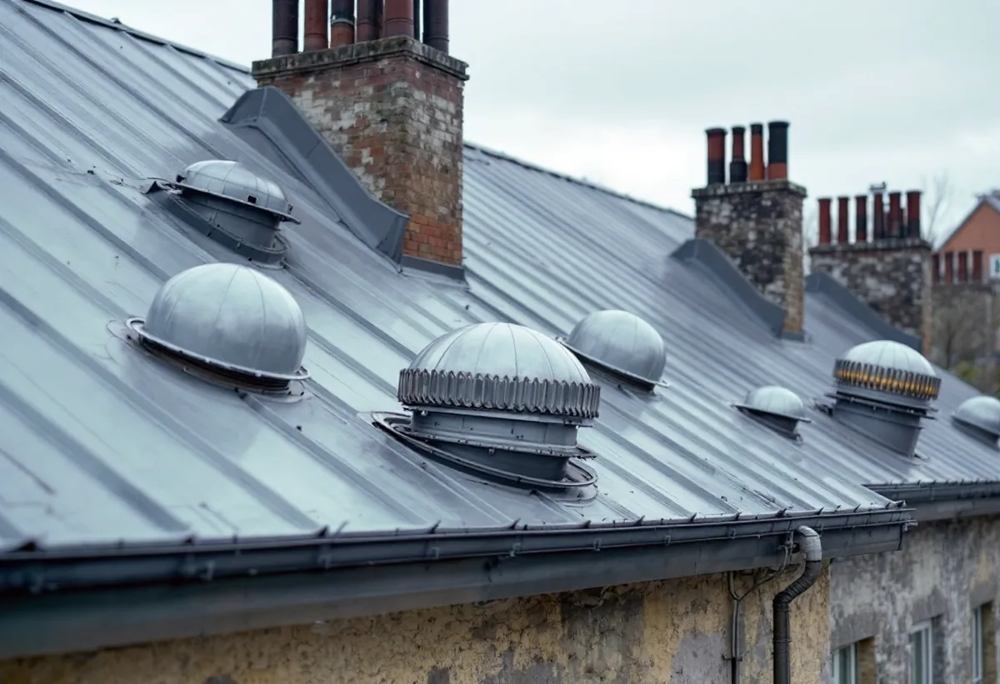
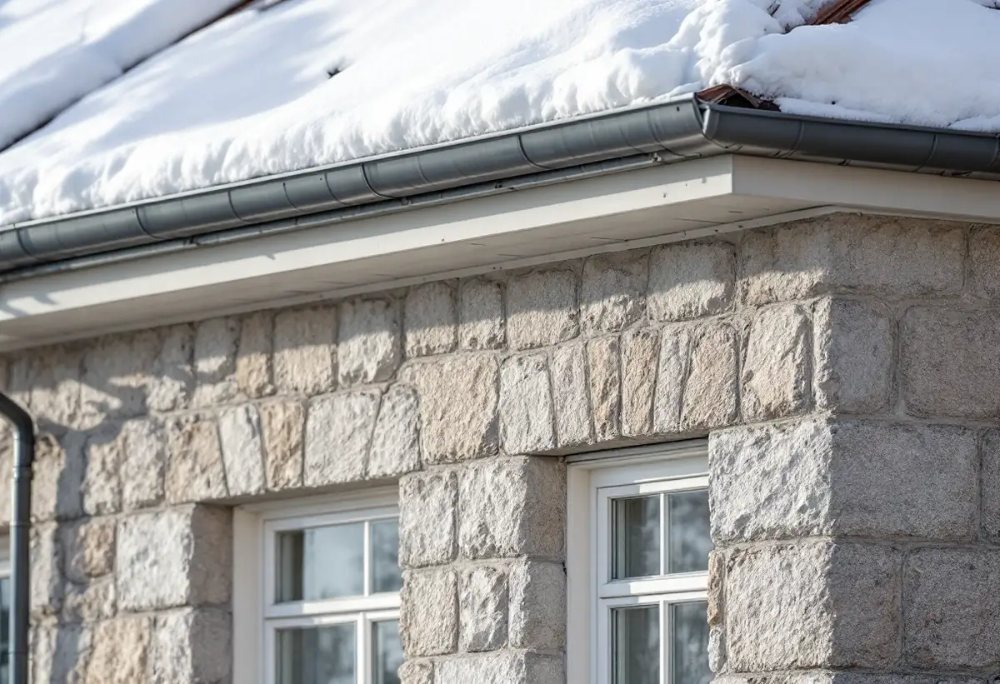

Takbyte i Vasastan
Byte av tegel-, betong- och plåttak.
Takbyte i Vasastan →I Vasastan är de flesta bostäder bostadsrätter, och taken är föreningarnas. Vi är takläggare i Vasastan för omläggning av plåttak, takfötter och takavvattning, och för det som sitter på taken: huvar, kanaler och aggregat som behöver anslutas tätt.
Stadens områdesfakta för 2025 räknar 12 579 bostäder i Västra Matteus och 8 889 i Gustav Vasa, de två statistikområden som täcker stora delar av Vasastan. I Västra Matteus var 8 990 av bostäderna bostadsrätter, i Gustav Vasa 5 707. Småhus finns i praktiken inte – i Västra Matteus redovisas inget enda. Takarbeten beställs därför av föreningar.
Riksintressebeskrivningen tecknar stenstadens normalhus: fem våningar vid en 18 meter bred gata, en gatufasad som delas i sockelvåning och huvudfasad, en markerad takfot och ibland en attikavåning. Gårdsfasaderna är enklare. För en takläggare betyder det att takfoten mot gatan och plåtdetaljerna där hör till husets ansikte, medan gårdssidan oftast ger mer frihet i val av detaljer.
Har taket fått nya installationer genom åren – frånluftsfläktar, kanaler, aggregat eller antenner – är varje sådan sak ett hål i taket som ska vara tätt. Vid en omläggning ser vi över alla genomföringar och föreslår vilka som kan samlas eller tas bort.
Gatorna i Vasastan är raka och husen står i gatuliv, så takfoten hänger rakt över trottoaren. Det gör att snörasskydd, hängrännor och stuprör har en praktisk betydelse för fastighetsägaren på vintern, och att arbete vid takfoten behöver planeras så att gående kan passera tryggt. Vi går igenom hur arbetet mot gatan ska skyddas innan vi lämnar kostnadsförslaget.
Oavsett om du behöver ett komplett takbyte eller en riktad renovering ger vi en tydlig bedömning och offert. Vi arbetar även i grannområden – se alla områden vi arbetar i.

Stockholms stad skriver att du inte behöver bygglov för en luftvärmepump, ett ventilationsaggregat eller liknande om det bara är ett aggregat, om det är mindre än 80 x 60 x 30 centimeter och om det inte påverkar byggnadens karaktär eller stör stadsbilden. En ny ventilationshuv på taket eller en kanal på fasaden kräver däremot oftast bygglov.
När en förening i Vasastan lägger om taket är det ett bra tillfälle att se över allt som sticker upp. Uttjänta huvar kan tas bort och genomföringarna plåtas igen. Nya huvar placeras där de syns minst från gatan och där plåtslagaren kan ansluta dem tätt.
Riksintressebeskrivningen konstaterar att många hus i stenstaden har en relativt låg klassning, gul klass, eftersom de har ändrats sedan de byggdes. Den säger samtidigt att stadsmiljön skulle förlora sin prägel om alla sådana hus byggdes om fritt, och att betydelsen för stadsmiljön ska vara avgörande vid prövningen – inte den enskilda byggnadens klassning.
För ett tak betyder det att kulör, material och detaljer mot gatan ska passa in i gatans helhet även på ett gulklassat hus. Ligger huset dessutom inom riksintresset, som Stadsmuseets karta visar med en blå ring, krävs lov även för sådant som annars är lovfritt.

Takfoten och den översta delen av gatufasaden är det som syns mest av ett stenstadstak från gatan. Vid en omläggning byter vi hängrännor, fotplåtar och snörasskydd så att de följer husets befintliga linjer och kulör, och vi föreslår material efter vad huset har i dag.
Riksintressebeskrivningen nämner vindsinredningar bland de mer begränsade förändringar som kan prövas i stenstaden, i enlighet med varsamhetskraven. Stadsbyggnadskontorets vägledningar för vindsinredningar och balkonger används som underlag vid prövningen.
För taket innebär en vindsinredning ofta nya takkupor eller takfönster. Staden räknar en större takkupa som en tillbyggnad och mindre takkupor som en lovpliktig fasadändring. Vi ser till att de nya öppningarna planeras ihop med omläggningen, så att taket inte behöver brytas upp två gånger, och att plåtdetaljerna runt kuporna följer det övriga taket.
Byte av tegel-, betong- och plåttak.
Takbyte i Vasastan →Riktade åtgärder som förlänger takets liv.
Takrenovering i Vasastan →Bedömning av skick inför beslut.
Takbesiktning i Vasastan →Nytt ytskydd på plåttak.
Takmålning i Vasastan →Skonsam tvätt och mossbehandling.
Taktvätt i Vasastan →Nytt plåttak och plåtarbeten.
Plåttak i Vasastan →Vi utgår från Bromma och tar takuppdrag i hela Vasastan, från Sankt Eriksplan till Odenplan och Roslagstull. Styrelsen får en skriftlig bedömning och ett kostnadsförslag med foton från taket, uppdelat på takfall och detaljer så att föreningen kan besluta i etapper om det behövs.
Läs mer om tak på villa eller jämför takbyte och takrenovering innan du bestämmer dig.
Vi arbetar även på Kungsholmen.
Takläggare på Kungsholmen →Vi arbetar även på Östermalm.
Takläggare på Östermalm →Vi arbetar även i Solna.
Takläggare i Solna →Vi arbetar även i Sundbyberg.
Takläggare i Sundbyberg →